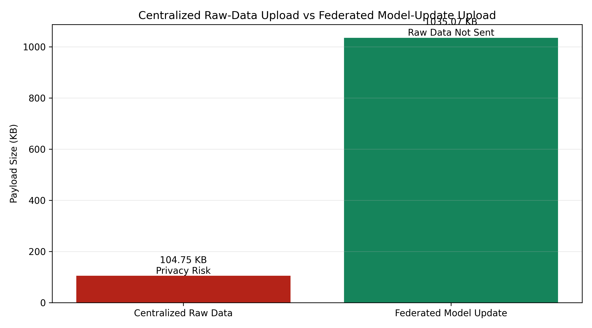
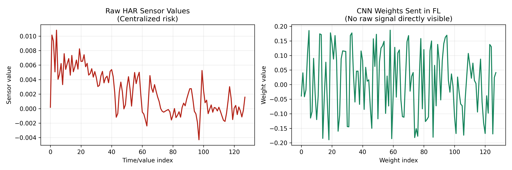
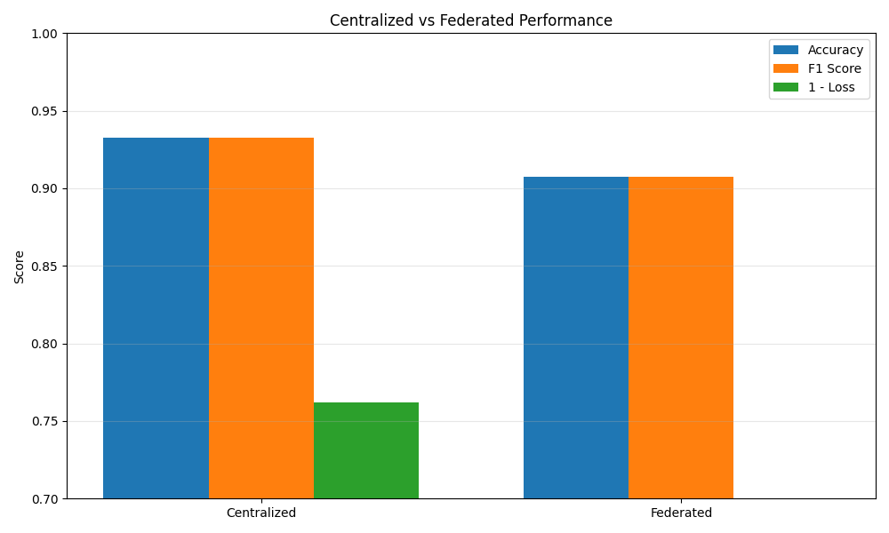
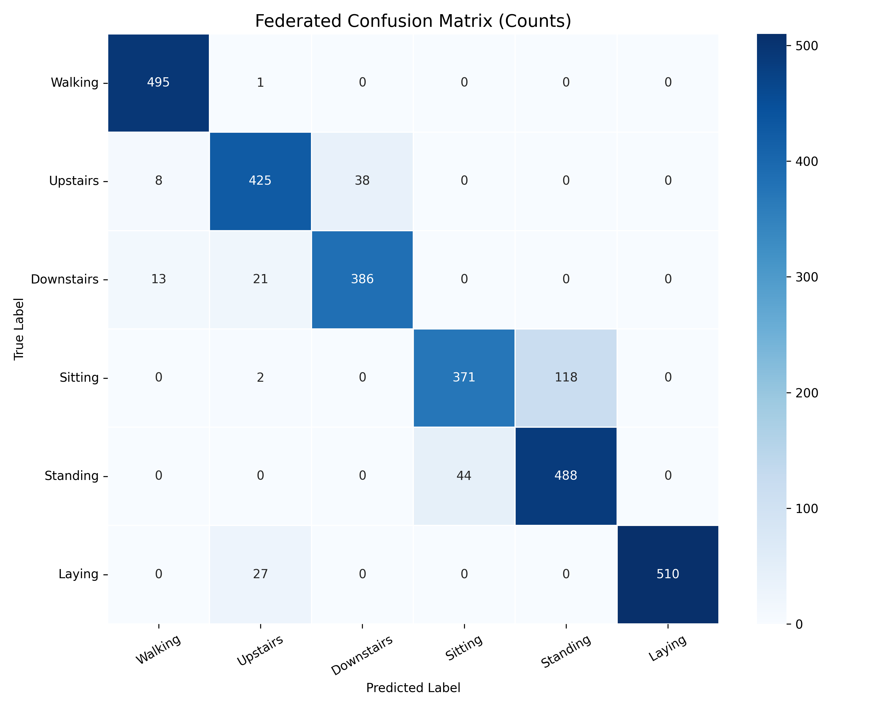
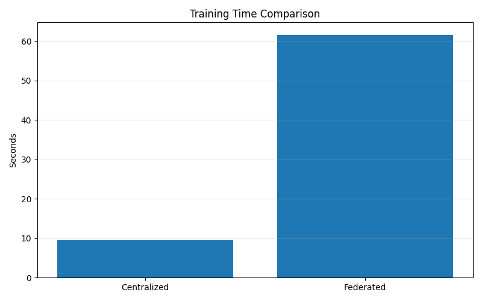
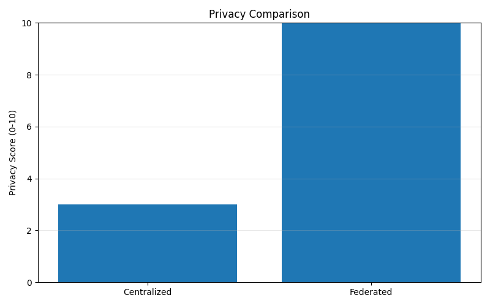

Privacy Verification Visual
Client Device
Raw accelerometer windowsKept local
Raw gyroscope windowsKept local
Activity labelsKept local
Model weightsSent
Sample countSent
OK
Privacy Gate Passed
Packet analyzer found zero raw-data fields in federated communication.
Federated Server
client_idVisible
weightsVisible
num_samplesVisible
sensor valuesNot visible
activity labelsNot visible
Privacy Preserved Successfully
For 180 logged federated packets, the only transmitted keys were client_id, weights, and num_samples. Raw wearable sensor data and labels were not transmitted to the server.
raw_sensor_data: blocked
activity_labels: blocked
gyro/accelerometer: blocked
Centralized vs Federated Payload Demo
Centralized Demo: Raw Data Exposed
| TCP Port | 5001 |
|---|---|
| Payload Keys | client_id, raw_sensor_data, activity_labels, subject_ids, description |
| Privacy Risk | True |
| Risky Fields | raw_sensor_data, activity_labels, subject_ids |
Federated Demo: Model Update Only
| TCP Port | 5000 |
|---|---|
| Payload Keys | client_id, weights, num_samples, description |
| Privacy Risk | False |
| Risky Fields | none |

privacy_comparison_demo.py: centralized sends raw HAR fields; FL sends model-update fields.
Centralized Accuracy
92.70%
Trained after combining client data.
Federated Accuracy
91.08%
Trained using model updates only.
Accuracy Gap
1.62%
Near-centralized performance.
Privacy Risk Fields
0
Across 180 FL packets.
What The Server Sees
Centralized Learning Risk Model
Client Device
Owns accelerometer, gyroscope and activity label data.
->
Central Server
Receives raw sensor windows and labels before training.
{
"client_id": 1,
"raw_sensor_data": [[... 9 channels x 128 values ...]],
"activity_labels": ["WALKING", "SITTING", "..."]
}
Raw data exposed
Implemented Federated Learning
Client Device
Trains the CNN locally using private sensor windows.
->
Federated Server
Receives model parameters and aggregates them with FedAvg.
{
"client_id": 7,
"weights": "HAR_CNN state_dict tensors",
"num_samples": 246
}
Raw data stays local
Performance vs Privacy
| Model | Accuracy | F1 Score | Loss | Training Time | Privacy |
|---|---|---|---|---|---|
| Centralized | 0.9270 | 0.9266 | 0.2651 | 25.48 sec | Low |
| Federated | 0.9108 | 0.9107 | 0.6165 | 37.70 sec | High |
Interpretation: federated learning loses only 1.62 percentage points of accuracy while avoiding raw sensor-data transfer to the server.
Packet-Level Privacy Evidence
FL Rounds
15
Repeated client-server communication.
Logged Packets
180
12 participating clients per round.
Average Payload
1035 KB
Serialized model update payload.
| Evidence | Observed Value | Meaning |
|---|---|---|
| Payload keys | client_id, weights, num_samples |
The server receives model updates, not raw sensor windows. |
| Privacy risk | False for every packet | No blocked fields such as labels, activity, gyro, accelerometer or dataset were found. |
| Wireshark filter | tcp.port == 5000 |
Shows FL communication between local client ports and the server port. |
| Raw-data privacy claim | Communication-level privacy | The system prevents raw data transmission; it does not claim cryptographic privacy. |
Generated Result Graphs




Live Review Script
1. Show the risk
Centralized learning requires data collection at the server, so raw sensor windows are exposed.
2. Show the FL payload
Point to the runtime payload:
client_id, weights, num_samples.
3. Show Wireshark
Filter with
tcp.port == 5000 to show model-update traffic during FL rounds.
4. Show the tradeoff
Federated accuracy is 91.08%, only 1.62% lower than centralized accuracy.